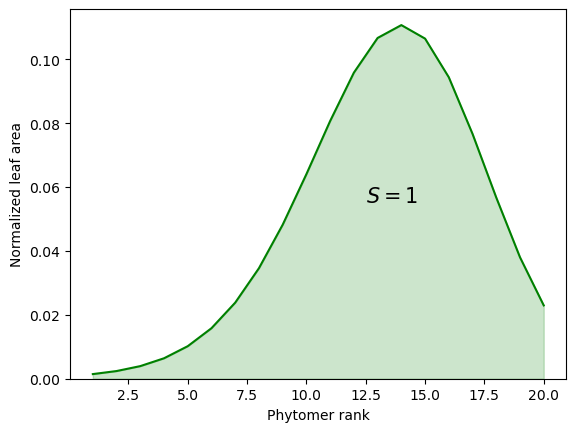
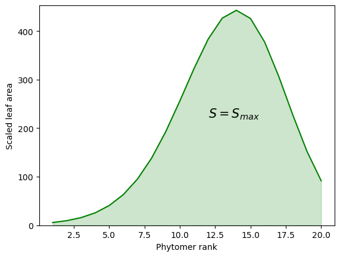
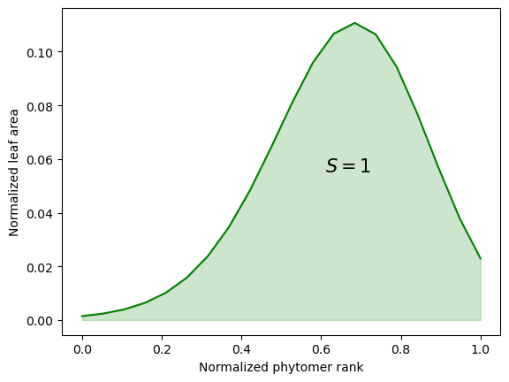
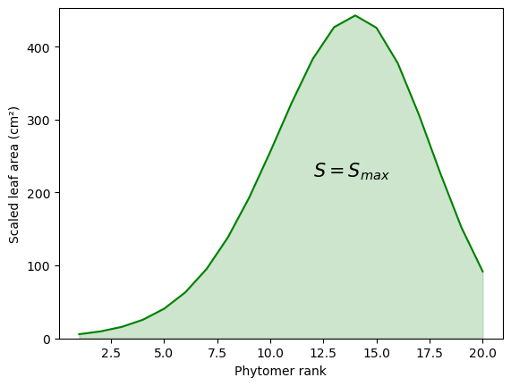
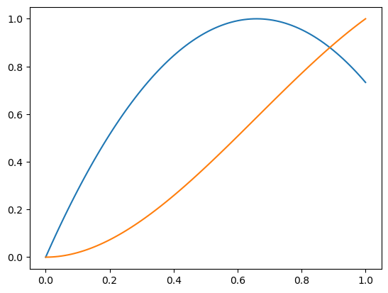
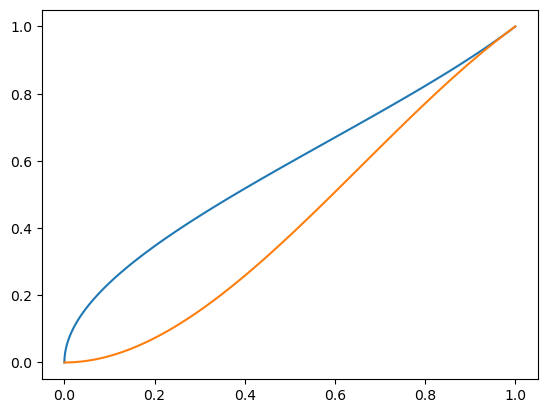
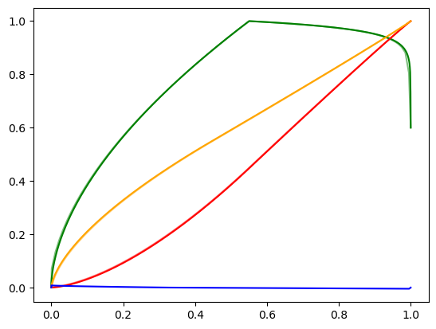

import math
import matplotlib.pyplot as plt
import numpy as np
from sympy import *
from scipy.optimize import brentq
from scipy.interpolate import CubicSpline
from openalea.archicrop.simulation import retrieve_stics_dynamics_from_file
from openalea.archicrop.plant_shape import bell_shaped_dist
from ipywidgets import interact, interactive, IntSlider, FloatSlider, fixed, Play, HBox, VBox, jslink4 Algorithm for leaf growth
Import test STICS data
# Data points
stics_output_file = 'mod_ssorghum.sti'
sowing_density = 10
inter_row = 0.4
stics_output_data = retrieve_stics_dynamics_from_file(stics_output_file, sowing_density)
time = [value["Thermal time"] for value in stics_output_data.values()]
LA_stics = [value["Plant leaf area"] for value in stics_output_data.values()]
height_stics = [value["Plant height"] for value in stics_output_data.values()]
par_stics = [value["Absorbed PAR"] for value in stics_output_data.values()]
height_potential_plant = max(height_stics)# Create the cubic spline interpolator
cs = CubicSpline(time, LA_stics)# Compute the first derivative
cs_derivative = cs.derivative()
# Evaluate the derivative at specific points
x_dense = np.arange(min(time), max(time), 1) # Fine grid for plotting
y_dense = cs(x_dense) # Interpolated values
dy_dense = cs_derivative(x_dense) # Derivative values4.1 \(H_0\): Linear leaf area growth
Inputs: - number of phytomers \(N_{phy}\) - development parameters: phyllochron \(\phi\), ligulochron \(lig\) - leaf area distribution in plant: \(leaf\_area = f(rank, params)\) with \(params = (r_{max}, skew)\) - maximal plant leaf area \(S_{max}\)
Steps: - Define number of phytomers
nb_phy = 20- Define leaf development from appearance to ligulation
def dev(phyllochron, ligulochron, nb_phy):
for i in range(1,nb_phy+1):
start = (i-1) * phyllochron
end = start + ligulochron
plt.plot(np.linspace(start, end, 2), [i,i], color="g")
# plt.fill_between([end/2.1,end/2.1+25], 0, nb_phy, color="grey", alpha=0.4)
plt.xlabel("Thermal time (°C.d)")
plt.ylabel("Phytomer rank")
plt.xlim(0,end)
plt.show()
interact(dev, phyllochron=IntSlider(min=30,max=60,step=5,value=45), ligulochron=IntSlider(min=50,max=100,step=5,value=80), nb_phy=fixed(nb_phy))<function __main__.dev(phyllochron, ligulochron, nb_phy)>- Define allometric law for relative leaf area as a function of phytomer rank
rmax = 0.7
skew = 0.0005
Smax = 1
leaf_areas = bell_shaped_dist(Smax, nb_phy, rmax, skew)
plt.plot(range(1,len(leaf_areas)+1), leaf_areas, color="g")
plt.fill_between(range(1,len(leaf_areas)+1), [0]*len(leaf_areas), leaf_areas, color="g", alpha=0.2)
plt.ylim(0,max(leaf_areas)+0.005)
plt.xlabel("Phytomer rank")
plt.ylabel("Normalized leaf area")
plt.text(rmax*nb_phy-1.5, max(leaf_areas)/2, '$S = 1$', fontsize = 15)
plt.show()
- Scale the leaf areas according to the given maximal plant leaf area \(S_{max}\)
Smax = 4000
scaled_leaf_areas = bell_shaped_dist(Smax, nb_phy, rmax, skew)
plt.plot(range(1,len(scaled_leaf_areas)+1), scaled_leaf_areas, color="g")
plt.fill_between(range(1,len(scaled_leaf_areas)+1), [0]*len(scaled_leaf_areas), scaled_leaf_areas, color="g", alpha=0.2)
plt.ylim(0,max(scaled_leaf_areas)+10)
plt.xlabel("Phytomer rank")
plt.ylabel("Scaled leaf area")
plt.text(rmax*nb_phy-2, max(scaled_leaf_areas)/2, '$S = S_{max}$', fontsize = 15)
plt.show()
- At each time step, knowing H0, add the leaf area increment of each growing organ to the sum of appeared leaf area.
def linear_leaf_growth(phyllochron, ligulochron, nb_phy):
fig, ax1 = plt.subplots()
starts = []
ends = []
for i in range(nb_phy):
start = i * phyllochron
end = start + ligulochron
starts.append(start)
ends.append(end)
ax1.plot(np.linspace(start, end, 2), [0,scaled_leaf_areas[i]], color="g")
ax1.text(end-4, scaled_leaf_areas[i]+3, f'{i+1}', fontsize = 10)
S = []
for t in range(max(ends)):
sum_temp = 0
for i,(s,e) in enumerate(zip(starts,ends)):
if s <= t < e:
sum_temp += (t-s)/(e-s) * scaled_leaf_areas[i]
elif t >= e:
sum_temp += scaled_leaf_areas[i]
S.append(sum_temp)
ax1.set_xlabel("Thermal time (°C.d)")
ax1.set_ylabel("Leaf area (cm²)")
ax1.fill_between([end/1.95,end/1.95+25], 0, max(scaled_leaf_areas), color="grey", alpha=0.4)
ax2 = ax1.twinx() # instantiate a second Axes that shares the same x-axis
ax2.set_ylabel("Plant leaf area (cm²)")
ax2.fill_between(range(len(S)), [0]*len(S), S, color="g", alpha=0.2)
fig.tight_layout() # otherwise the right y-label is slightly clipped
plt.show()
interact(linear_leaf_growth, phyllochron=IntSlider(min=30,max=60,step=5,value=45), ligulochron=IntSlider(min=50,max=100,step=5,value=80), nb_phy=fixed(nb_phy))<function __main__.linear_leaf_growth(phyllochron, ligulochron, nb_phy)>Outputs: - Plant leaf area growth dynamics \(\forall t \in [0,T], S_{plant}(t) = \sum_{i=1}^{N_{phy, appeared}} s_i(t)\)
4.2 \(H_1\): given \(S_{constraint}=f(t)\), \(\forall t \in [0,T]\), \(S_{potential}(t) \geq S_{constraint}(t)\)
Inputs: - number of phytomers \(N_{phy}\) - development parameters: phyllochron \(\phi\), ligulochron \(lig\) - leaf area distribution in plant: \(leaf\_area = f(rank, params)\) with \(params = (r_{max}, skew)\) - plant leaf area growth dynamics \(S_{constraint}=f(t)\), such that maximal plant leaf area \(S_{max} = max(S_{constraint}(t))\)
Steps: - Define number of phytomers
nb_phy = 20- Define leaf development from appearance to ligulation
def dev(phyllochron, ligulochron, nb_phy):
starts = []
ends = []
for i in range(1,nb_phy+1):
start = (i-1) * phyllochron
end = start + ligulochron
starts.append(start)
ends.append(end)
plt.plot(np.linspace(start, end, 2), [i,i], color="g")
nb_growing = []
for t in range(max(ends)):
nb_growing_temp = 0
for i,(s,e) in enumerate(zip(starts,ends)):
if s <= t < e:
nb_growing_temp += 1
nb_growing.append(nb_growing_temp)
plt.fill_between(range(len(nb_growing)), [0]*len(nb_growing), nb_growing, color="g", alpha=0.2)
plt.xlabel("Thermal time (°C.d)")
plt.ylabel("Phytomer rank")
plt.xlim(0,end)
plt.show()
interact(dev, phyllochron=IntSlider(min=30,max=60,step=5,value=45), ligulochron=IntSlider(min=50,max=100,step=5,value=80), nb_phy=fixed(nb_phy))<function __main__.dev(phyllochron, ligulochron, nb_phy)>- Define allometric law for relative leaf area as a function of phytomer rank
rmax = 0.7
skew = 0.0005
Smax = 1
leaf_areas = bell_shaped_dist(Smax, nb_phy, rmax, skew)
plt.plot(np.linspace(0,1,20), leaf_areas, color="g")
plt.plot()
plt.fill_between(np.linspace(0,1,20), [0]*len(leaf_areas), leaf_areas, color="g", alpha=0.2)
# plt.ylim(0,max(leaf_areas)+0.005)
plt.xlabel("Normalized phytomer rank")
plt.ylabel("Normalized leaf area")
plt.text(rmax-0.09, max(leaf_areas)/2, '$S = 1$', fontsize = 15)
plt.show()
- Scale the leaf areas according to the given maximal plant leaf area \(S_{max}\), to obtain \(s_{i, potential}\) for each leaf \(i\).
Smax = 4000
scaled_leaf_areas = bell_shaped_dist(Smax, nb_phy, rmax, skew)
plt.plot(range(1,len(scaled_leaf_areas)+1), scaled_leaf_areas, color="g")
plt.fill_between(range(1,len(scaled_leaf_areas)+1), [0]*len(scaled_leaf_areas), scaled_leaf_areas, color="g", alpha=0.2)
plt.ylim(0,max(scaled_leaf_areas)+10)
plt.xlabel("Phytomer rank")
plt.ylabel("Scaled leaf area (cm²)")
plt.text(rmax*nb_phy-2, max(scaled_leaf_areas)/2, '$S = S_{max}$', fontsize = 15)
plt.show()
At each time step, distribute the increment of given plant leaf area \(\frac{dS_{constraint}(t)}{dt}\) among \(g\) growing leaves.
Let’s consider \(F(\alpha_1 x_1,…,\alpha_g x_g) = \sum_{i=1}^{g} \alpha_i x_i\), where \(\sum_{i=1}^{g} \alpha_i = 1\) and \(x_i = ds_i\) or \(dh_i\)
\(H_{1.0}\) : Equal distribution of the gain among all growing vegetative organs
For a growing leaf \(i\) among \(g\) growing leaves in a plant, given a plant leaf area increment \(dS(t)\) for the plant at time \(t\), the leaf area increment \(ds_i(t)\) is:
\(ds_i(t)=\frac{dS(t)}{g}\) with \(\alpha_1=\dots=\alpha_g=\frac{1}{g}\)
def equal_distribution(ds, g):
return [ds/g for i in range(g)]\(H_{1.1}\): Demand of leaf area proportionnal to final area
For a growing leaf \(i\) of potential leaf area \(S_{i}^{max}\) among \(g\) growing leaves in a plant, given a plant leaf area increment \(dS(t)\) for the plant at time \(t\), the leaf area increment \(ds_i(t)\) is:
$ds_i(t)=i dS(t) $ such that ${i} = $ and \(\sum^{g}_{i=1} \alpha_{i} = 1\)
def demand_related_distribution(ds, potential_areas_growing_leaves):
sum_areas_growing_leaves = sum(potential_areas_growing_leaves)
return [ds*pi/sum_areas_growing_leaves for pi in potential_areas_growing_leaves]
ds = 10
potential_areas_growing_leaves = [5,8,6]
print(demand_related_distribution(ds, potential_areas_growing_leaves))[2.6315789473684212, 4.2105263157894735, 3.1578947368421053]\(H_{1.2}\): Partition of unity with Bernstein polynomials of degree \(g-1\):
\(\alpha_{i, g−1}(x)= \frac{(g−1)!}{i!(g−1−i)!} x^i (1−x)^{g−1−i}\) such that \(\sum^{g−1}_{i=0} \alpha_{i, g−1} (x) = 1, \forall x \in [0,1]\)
in progress
def bernstein_polynomials(n, x): # n = g-1
"""
Compute Bernstein polynomials of degree n at point x (in [0,1]).
Returns a list of coefficients for partition of unity.
"""
bernstein = []
for i in range(n + 1):
bin_coeff = math.comb(n, i) # Binomial coefficient
bernstein.append(bin_coeff * (x**i) * ((1 - x)**(n - i)))
return bernsteindef partition_of_unity(x_fixed):
"""
"""
# print("Bernstein Polynomials:")
g_range = [2,3,4]
x_range = np.arange(0,1.1,0.1)
fig, axes = plt.subplots(1,len(g_range), figsize=(12, 4))
for g in g_range:
# print(f"For {g} growing organs:")
n = g - 1
values = {i: [] for i in range(1, g + 1)}
for x in x_range:
bernstein = bernstein_polynomials(n, x)
for j,b in enumerate(bernstein):
values[j+1].append(round(b,5))
# print(f" - at point {round(x,1)}", bernstein)
for k,v in values.items():
axes[g-2].plot(x_range, v, color='green')
axes[g-2].text(x_fixed, v[int(x_fixed*10)], f"{k}")
axes[g-2].set_title(f"For {g} growing organs")
axes[g-2].plot([x_fixed]*2,[0,1], linestyle='--', color='gray')
plt.suptitle("Partition of unity with Bernstein polynomials")
plt.subplots_adjust(wspace=0.2)
plt.show()
interact(partition_of_unity, x_fixed=FloatSlider(min=0.0,max=1.0,step=0.1,value=0.3))<function __main__.partition_of_unity(x_fixed)>4.3 From leaf area increment to leaf length increment
Leaf shape
wl = 0.12def sr_prevot(nb_segment=100, alpha=-2.3):
beta = -2 * (alpha + np.sqrt(-alpha))
gamma = 2 * np.sqrt(-alpha) + alpha
s = np.linspace(0, 1, nb_segment + 1)
r = alpha * s**2 + beta * s + gamma
return s, r
def leaf_elongation(l, dl):
sp, rp = sr_dornbush()
ss = int(l*100)
dss = int(dl*100)
plt.plot(sp, rp, color="g")
plt.plot(sp, -rp, color="g")
plt.plot(sp,[0]*len(rp), color="g", linestyle="--")
plt.fill_between(sp[-ss:], -rp[-ss:], rp[-ss:], color="g", alpha=0.2)
plt.fill_between(sp[-(ss+dss):], -rp[-(ss+dss):], rp[-(ss+dss):], color="g", alpha=0.2)
# plt.text(max(0,1-(l+dl))+0.03, 0.1, f"dl = {round(min(dl,1.0-l),5)}")
plt.xlabel("Normalized leaf length")
plt.ylabel("Normalized leaf width")
plt.show()
interact(leaf_elongation, l=FloatSlider(min=0.001,max=1.001,step=0.05,value=0.3), dl=FloatSlider(min=0.0,max=1.0,step=0.05,value=0.1))<function __main__.leaf_elongation(l, dl)>l = f(S) curve fitting
With Prevot leaf shape
from scipy.integrate import cumulative_simpson
l,p = sr_prevot()
p = p[::-1]
S = cumulative_simpson(x=l, y=p, initial=0)
S_norm = S / S[-1]
plt.plot(l,p)
plt.plot(l,S_norm)
plt.show()
from scipy.interpolate import splrep, splev
t,c,k = splrep(x=S_norm, y=l, k=3, task=0)
y = splev(x=S_norm, tck=(t,c,k))
plt.plot(S_norm, y)
plt.plot(l, S_norm)
plt.show()
S_t = 0.3
print(f"For a surface of {S_t}, we get a leaf length of {round(float(splev(x=S_t, tck=(t,c,k))),4)}")For a surface of 0.3, we get a leaf length of 0.4362With Dornbush leaf shape
from openalea.archicrop.cereals_leaf import sr_dornbush
from scipy.interpolate import splrep, splev
# 100 pts
l, p = sr_dornbush(nb_segment=100)
p = p[::-1]
S = cumulative_simpson(x=l, y=p, initial=0)
S_norm = S / S[-1]
t,c,k = splrep(x=S_norm, y=l, k=3, task=0)
y = splev(x=S_norm, tck=(t,c,k))
S_t = 0.0001
print(f"For a surface of {S_t}, we get a leaf length of {round(float(splev(x=S_t, tck=(t,c,k))),10)}")
plt.plot(l,p,'g', alpha=0.5)
plt.plot(l,S_norm,'r', alpha=0.5)
plt.plot(S_norm, y,'orange', alpha=0.5)
# 1000 pts
l_1000, p_1000 = sr_dornbush(nb_segment=1000)
p_1000 = p_1000[::-1]
S_1000 = cumulative_simpson(x=l_1000, y=p_1000, initial=0)
S_norm_1000 = S_1000 / S_1000[-1]
t_1000,c_1000,k_1000 = splrep(x=S_norm_1000, y=l_1000, k=3, task=0)
y_1000 = splev(x=S_norm_1000, tck=(t_1000,c_1000,k_1000))
print(f"For a surface of {S_t}, we get a leaf length of {round(float(splev(x=S_t, tck=(t_1000,c_1000,k_1000))),10)}")
plt.plot(l_1000,p_1000,'g')
plt.plot(l_1000,S_norm_1000,'r')
plt.plot(S_norm_1000, y_1000,'orange')
y_1000_to_100 = np.array([v for i,v in enumerate(y_1000) if i%10==0])
plt.plot(S_norm, y_1000_to_100-y, 'b')
print(y_1000_to_100-y)
plt.show()For a surface of 0.0001, we get a leaf length of 0.0020990851
For a surface of 0.0001, we get a leaf length of 0.0015153033
[ 2.31370477e-18 8.11804009e-03 7.93353918e-03 7.74903827e-03
7.56453736e-03 7.38003644e-03 7.19553553e-03 7.01103462e-03
6.82653371e-03 6.64203280e-03 6.45753189e-03 6.27303098e-03
6.08853007e-03 5.90402916e-03 5.71952824e-03 5.53502733e-03
5.35052642e-03 5.16602551e-03 4.98152460e-03 4.79702369e-03
4.61252278e-03 4.42802187e-03 4.24352096e-03 4.05902004e-03
3.87451913e-03 3.69001822e-03 3.50551731e-03 3.32101640e-03
3.13651549e-03 2.95201458e-03 2.76751367e-03 2.58301276e-03
2.39851184e-03 2.21401093e-03 2.02951002e-03 1.84500911e-03
1.66050820e-03 1.47600729e-03 1.29150638e-03 1.10700547e-03
9.22504556e-04 7.38003644e-04 5.53502733e-04 3.69001822e-04
1.84500911e-04 1.11022302e-16 -8.34851245e-05 -1.66970249e-04
-2.50455373e-04 -3.33940498e-04 -4.17425622e-04 -5.00910747e-04
-5.84395871e-04 -6.67880996e-04 -7.51366120e-04 -8.34851245e-04
-9.18336369e-04 -1.00182149e-03 -1.08530662e-03 -1.16879174e-03
-1.25227687e-03 -1.33576199e-03 -1.41924712e-03 -1.50273224e-03
-1.58621736e-03 -1.66970249e-03 -1.75318761e-03 -1.83667274e-03
-1.92015786e-03 -2.00364299e-03 -2.08712811e-03 -2.17061324e-03
-2.25409836e-03 -2.33758349e-03 -2.42106861e-03 -2.50455373e-03
-2.58803886e-03 -2.67152398e-03 -2.75500911e-03 -2.83849423e-03
-2.92197936e-03 -3.00546448e-03 -3.08894961e-03 -3.17243473e-03
-3.25591985e-03 -3.33940498e-03 -3.42289010e-03 -3.50637523e-03
-3.58986035e-03 -3.67334548e-03 -3.75683060e-03 -3.84031573e-03
-3.92380085e-03 -4.00728597e-03 -4.09077110e-03 -4.17425622e-03
-4.25774135e-03 -4.34122647e-03 -4.42471160e-03 -4.50819672e-03
0.00000000e+00]
Analytical expression of leaf area as a function of midrib length from tip to base
# Define the variable and parameters
s = symbols('l')
L, wl, alpha = symbols('L, wl, alpha')
# Define the scaled leaf shape function with parameters
# alpha = -2.3
beta = -2 * (alpha + sqrt(-alpha))
gamma = 2 * sqrt(-alpha) + alpha
r = wl * L * (alpha * (s/L)**2 + beta * (s/L) + gamma)
# Reflect the function to the axis x=0.5
reflected_r = r.subs(s, -s+L).simplify()
# Find the indefinite integral (primitive)
primitive_f = integrate(reflected_r, s)
print(2*primitive_f)2*l**2*wl*sqrt(-alpha) + 2*alpha*l**3*wl/(3*L)def leaf_area(l, L=1, wl=1, alpha=-2.3):
return 2*l**2*wl*math.sqrt(-alpha) + 2*alpha*l**3*wl/(3*L)
def d_leaf_area(l, dl, L=1, wl=1):
return leaf_area(l+dl,L,wl) - leaf_area(l,L,wl)
def d_leaf_area_norm(l, dl, L=1, wl=1):
return (leaf_area(l+dl,L,wl) - leaf_area(l,L,wl)) / leaf_area(L,L,wl)
print("Total leaf area :", leaf_area(1, wl=0.12))
print("Delta leaf area in l=[0.5,0.6]", d_leaf_area(0.5, 0.1, wl=0.12))Total leaf area : 0.1799780213144744
Delta leaf area in l=[0.5,0.6] 0.023293582344592154plt.plot(l_values, [leaf_area(value) for value in l_values], color="g")
plt.xlabel("Normalized leaf length l")
plt.ylabel("Discretized dS/dl")
plt.show()--------------------------------------------------------------------------- NameError Traceback (most recent call last) Cell In[56], line 1 ----> 1 plt.plot(l_values, [leaf_area(value) for value in l_values], color="g") 2 plt.xlabel("Normalized leaf length l") 3 plt.ylabel("Discretized dS/dl") NameError: name 'l_values' is not defined
Discretizing leaf area to get dS-to-dl correspondance easily
L = 1
wl = 1
dl = 0.05*L
l_values = np.arange(0.0, L+dl, dl)
ds_list = [0.0]
for l in l_values[1:]:
ds_list.append(d_leaf_area(l,dl,L,wl))
print(ds_list)
print(np.sum(ds_list))
fig, ax1 = plt.subplots()
ax1.bar(l_values, ds_list, width=dl, color="g", alpha=0.4)
ax1.set_xlabel("Normalized leaf length l")
ax1.set_ylabel("Discretized dS/dl")
ax2 = ax1.twinx()
ax2.plot(l_values, np.cumsum(ds_list), color="g")
ax2.set_ylabel("Cumulated sum of leaf area along midrib : S = w(l)")
ax2.set_ylim(0,np.sum(ds_list))
fig.tight_layout() # otherwise the right y-label is slightly clipped
plt.show()from scipy.optimize import fsolve
# Define the area function A(l) as given
def A_l(l, alpha, wl, L):
return 2 * l**2 * wl * math.sqrt(-alpha) + (2 * alpha * l**3 * wl) / (3 * L)
# Inverse function: finding l for a given A
def l_A_inverse(A, alpha, wl, L):
# Define the equation A(l) - A = 0 to solve
func = lambda l: A_l(l, alpha, wl, L) - A
# Use fsolve to numerically solve for l given A
l_guess = 0.5 # initial guess for fsolve
l_solution = fsolve(func, l_guess)[0]
return l_solution
# Generate A values and compute corresponding l(A) values
A_values = np.linspace(0, 1, 500)
l_values_inverse = np.array([l_A_inverse(A, alpha, wl, L) for A in A_values])
# Restrict l to the range [0, 1] and adjust the corresponding A values
l_values_in_range = l_values_inverse[(l_values_inverse >= 0) & (l_values_inverse <= 1)]
A_values_in_range = A_values[:len(l_values_in_range)]
# Plot the results for l in the range [0, 1]
plt.figure(figsize=(8, 6))
plt.plot(A_values_in_range, l_values_in_range, label="l(A) within [0, 1]", color="darkgreen")
plt.title("Plot of l(A) vs A (Restricted to l in [0, 1])", fontsize=14)
plt.xlabel("A (Area)", fontsize=12)
plt.ylabel("l (Length)", fontsize=12)
plt.grid(True)
plt.legend()
plt.show()from scipy.interpolate import BSpline, make_interp_spline, UnivariateSpline
ds_cumsum = np.cumsum(ds_list)
# # Create a B-spline with degree k=2 (quadratic spline)
# k = 3 # Degree of the spline
# bspline = make_interp_spline(ds_cumsum, l_values, k=k)
# # # Evaluate spline and approximate expressions
# # l_new = bspline(ds_cumsum)
# # Extract knots, coefficients, and degree
# knots = bspline.t # Knot vector
# coefficients = bspline.c # Spline coefficients
# degree = bspline.k # Degree of the spline
# # Define symbolic variable
# x = symbols('x')
# # Generate the B-spline piecewise expression
# piecewise_expr = []
# for i in range(len(coefficients) - degree - 1):
# # Get the polynomial coefficients for the current interval
# basis_poly = BSpline.basis_element(knots[i:i+degree+2])
# piece_expr = sum(c * (x - knots[i])**j for j, c in enumerate(basis_poly.c))
# condition = (x >= knots[i]) & (x < knots[i + 1])
# piecewise_expr.append((piece_expr, condition))
# # Combine into a symbolic piecewise expression
# b_spline_expr = Piecewise(*piecewise_expr)
# print("B-Spline Expression:", b_spline_expr)
cs_ds = CubicSpline(ds_cumsum, l_values, bc_type="natural")
l_interp = cs_ds(ds_cumsum)
# Define symbolic variable
x = symbols('x')
piecewise_expr = []
for i in range(len(ds_cumsum) - 1):
# Coefficients for the interval [x_points[i], x_points[i+1]]
c0, c1, c2, c3 = cs_ds.c[:, i]
xi = ds_cumsum[i]
poly = c0 + c1 * (x - xi) + c2 * (x - xi)**2 + c3 * (x - xi)**3
piecewise_expr.append((poly, (x >= xi) & (x < ds_cumsum[i + 1])))
# Combine into a single Piecewise expression
spline_expr = Piecewise(*piecewise_expr)
print("Spline expression:", spline_expr)
# plt.plot(ds_cumsum, [spline_expr.subs(x, ds) for ds in ds_cumsum], color="red")
# plt.scatter(ds_cumsum, l_values, color="g")
# plt.plot(ds_cumsum, basis_poly, color="black")
plt.plot(ds_cumsum, l_interp, color="black")
# plt.plot(ds_cumsum, poly, color="black")
plt.xlabel("Cumulated sum of leaf area along midrib : S = w(l)")
plt.ylabel("Normalized leaf length l")
plt.show()corres_dl_dS = {}
for i,dl in enumerate(l_values):
corres_dl_dS[dl] = np.cumsum(ds_list)[i]
# print(corres_dl_dS)l = 0
dS_input = 0.02
def search_new_dl(d, l, dS_input, L=1):
found_start = False
first = True
key_prev = None
value_prev = None
for key, value in d.items():
if key >= l:
found_start = True
if first:
S_start = value
key_prev, value_prev = key, value
first = False
if found_start:
# print(key, value-S_start)
if value-S_start >= dS_input:
return key_prev, value_prev
else:
key_prev, value_prev = key, value
return L, value # if no match is found --> finished
result = search_new_dl(corres_dl_dS, l, dS_input)
print("New l = ", round(result[0],4))Whole process for one leaf
l = 0
l_list = [l]
dS_new_list = [0]
for dS_input in dy_dense:
l, dS_new = search_new_dl(corres_dl_dS, l, dS_input, L=3000)
l_list.append(l)
dS_new_list.append(dS_new)
# plt.plot(l_list, dS_new_list, color="g")
# plt.show()plt.plot(x_dense, dS_new_list[:-1], color="g")
plt.plot(x_dense, y_dense, color="orange")
plt.show()For several leaves
# dev
# for loop
# distribute among growing leaves
# for each growing leaf
# translate dS in dl (check potential size)
# compare plant profiles of potential and constraint- Analytical resolution of dl (in progress)
L = 1
dS_range = np.arange(0.01,0.1,0.01)
x = np.arange(0.05,1.05*L,0.05)
fig, ax = plt.subplots(2,1)
ax[0].plot([0]+x, [3.03*l**2*wl - 1.53*l**3*wl/L for l in [0]+x], color="g")
ax[0].set_ylabel("S = w(l)")
for dS in dS_range:
ax[1].plot(x, [dS/(3.03*l**2*wl - 1.53*l**3*wl/L) for l in x])
ax[1].set_ylabel("dl ?")
ax[1].set_xlabel("Leaf length l, from tip to base")
plt.show()
for l in x:
print("l :", round(l,3), "dl :", round(dS/(3.03*l**2*wl - 1.53*l**3*wl/L),3))